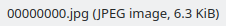

Slow Realization
题目
Ryan's friend has hidden something in this image and challenged his to find it out. Can you help him recover the secret message ??
Hint: Dont look around, look closer. . . slowly . . .
解决方案
解压后有一个被加密的flag.pdf和一个scenery.jpeg，注意到图片文件大小和分辨率不是很匹配，图片可能还含有其他文件。不过binwalk并没有发现更多文件。尝试用foremost提取：
foremost scenery.jpeg

提取到一个大小正常的jpeg图片，于是和原文件十六进制对比，发现图片是从原文件头部提取出来的。直接把原文件头部是提取出的jpeg的部分删除。保存后，发现新文件的头部特征很像MP3，尝试用播放器打开，能听到是OneRepublic - Counting Stars的片段，中间夹杂了一段蜂鸣音，猜测是摩斯电码：
.--. .- - .. . -. -.-. . .. ... - .... . -.- . -.-- .--. -.-. - ..-. -. ----- - .... ...-- .-. ...--
PATIENCEISTHEKEYPCTFN0TH3R3
PATIENCE IS THE KEY PCTF N0T H3R3
然后我们就卡在这里了，不管是看蜂鸣音中间的一小段疑似人声的片段的频谱还是其它思路都没有结果。赛后看到有些队伍直接用pdfcrack爆破，似乎用的是Kali Linux中的词典rockyou.txt，结果是：
congratulations
于是就能解开：
pctf{y0u_h34rd_m3_r1ght}
后续找到非爆破的解法再更新这里。附上提取出的似乎是mp3的文件。